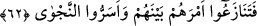
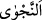
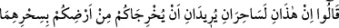
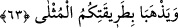

azâb ile kökünüzü keser! İftira eden, muhakkak perişan olur.” dedi.
Sanki “Fir’avn ve sihirbazlar geldiğinde Mûsâ ne yaptı?” diye sorulmuş, cevap olarak
nasîhat yoluyla “Mûsâ onlara: “Yazık size!” Veyl aslında: “Allah sizi helâk etsin, size
azab etsin” mânâsına bedduâdır. Burada ise sihirbazları ve Fir’avn’u Allâh’a iftirâ
atmaktan vazgeçirmek için kullanılmıştır.
Benim elimde zâhir olan mûcizelere sihir diyerek “Allah hakkında yalan
uydurmayın!” veya hiç kimseyi Allâh’a ortak koşmayın. İftirâ, kasden birine yalan bir
şeyi isnâd etmek, yalan söylemektir.
et-Te’vîlât’ta der ki: “Mûsâ (a.s.) sihirbazlara şöyle dedi: “Yazık size!”
peygamberlere verilen mûcizeye karşılık olarak bize de olağanüstü güçler verildi diye
iddiâ ederek mûcizenin karşısına sihir ile çıkarak “Allah hakkında yalan uydurmayın!”
“Sonra” eğer böyle yaparsanız “O,” Allah “bir azâb ile kökünüzü keser!” o sebeple
sizi helâk eder ve kökünüzü kazır. Allâh’ın azâbı kimsenin güç yetiremeyeceği korkunç
bir azaptır. “İftirâ eden,” yâni, Allâh’a karşı kim ve ne şekilde iftirâ ederse etsin
“muhakkak perişan olur.” nasîbsiz ve ümidsiz kalır.
62. Bunun üzerine onlar, durumlarını aralarında tartıştılar; gizli gizli fısıldaştılar.
“Bunun üzerine onlar,” Mûsâ (a.s.)’ın sözlerini işitince sihirbazlar sanki kızmış gibi
“durumlarını” kendilerinden istenilen işi, yani Mûsâ (a.s.)’ı mağlub etme yollarını
“aralarında tartıştılar;” istişâre ve müzâkere ettiler.
Mûsâ (a.s.) ne konuştuklarına vâkıf olmasın diye “gizli gizli fısıldaştılar.”
Konuşmalarını gizlemekte son derece titiz davrandılar.
“
”, gizlemek demektir. Aslı onu yüksek olduğu için başka yerlerden ayrı olan
yüksekçe bir yere götürdüler demektir. Kelimenin aslının “
”tan olduğu da
söylenmiştir. Bu ise bir kimseye kurtuluşu olan konuda yardım etmektir. Ya da sırrın
başkalarının muttali olmasından korunması demektir. Onların aralarında geçen gizli
konuşma aşağıdaki âyetin işâret ettiği üzere Mûsâ ve Hârun (a.s.)’ın birer sihirbaz
olduğudur:
63. Şöyle dediler: “Bu ikisi, muhakkak ki, sihirleriyle sizi yurdunuzdan çıkarmak
ve sizin örnek yolunuzu ortadan kaldırmak isteyen iki sihirbazdırlar sadece.”